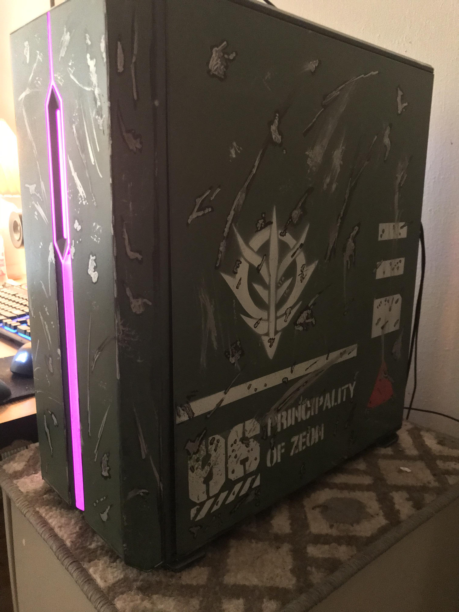
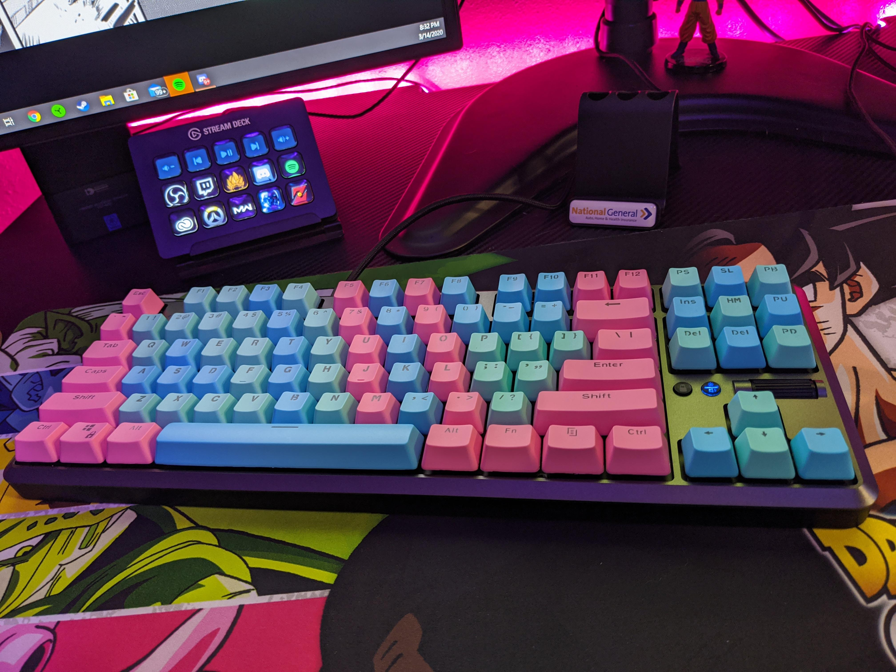
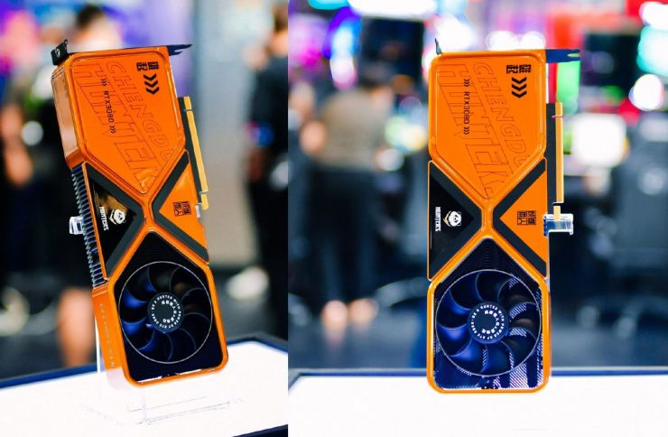

| Main Page About me Services Inquiry |
|
Custom PC Case TechPink did a great Job in executing the idea I had in my head, they custom painted the logos and provided a transluscent layer wrap over it for the metal scratch design. 5 Stars - Greg (Manila)  |
|
Custom Keyboard Frame & Keycaps Had my gaming keyboard shipped to TechPink, showed them a layout of how I wanted the keyboard to look, provided them the colors I wanted, and it turned out great, got it back after two days. Excellent service - Kyle (Mandaluyong)  |
|
Custom GPU Asked TechPink to construct a custom frame for my GPU which featured the colors and text I wanted to be displayed, they didn't disappoint! - Kate (Rizal)  |